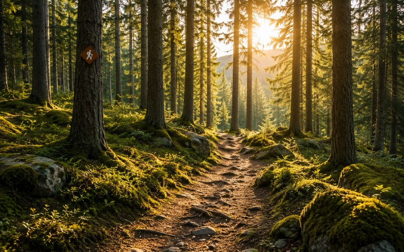

Norrgläntan

Naturen väntar i Norrgläntan
Upptäck vidsträckta skogar, stilla sjöar och storslagna vyer. I Norrgläntan finns plats för både äventyr och avkoppling.
Nära till naturen
I Norrgläntan är naturen alltid nära. Här möts
skogar, sjöar och berg i ett landskap som bjuder
in till upplevelser året runt. Vandra längs
slingrande leder, ta dig ut på vattnet eller
hitta en lugn plats och njut av omgivningarna.
Oavsett om du söker äventyr eller bara vill komma
bort en stund finns det alltid något nytt att upptäcka.
Upplev Norrgläntan
Vandra

Följ leder genom skog och över öppna höjder. Här finns vandringar för både korta utflykter och längre dagar ute i naturen.
Paddla

Ta dig ut på Norrgläntans sjöar och upptäck landskapet från vattnet. Hitta din egen vik eller stanna till vid någon av rastplatserna längs stranden.
Upptäck

Ibland är det bästa äventyret det som inte är planerat. Utforska skogar och utsiktsplatser och upptäck dina egna favoriter längs vägen.
Planera ditt besök
Norrgläntan har något att erbjuda under hela året. Här hittar du boenden nära naturen och bra utgångspunkter för områdets aktiviteter. Börja planera ditt besök och hitta det som passar dig.